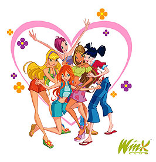

W.I.T.C.H.
 De: La Frikipedia, la enciclopedia extremadamente seria.
De: La Frikipedia, la enciclopedia extremadamente seria.

|
Categorizar
|
| Este artículo no está categorizado porque el autor no quería o no sabía o no podía categorizar. O bien está mal categorizado. En cualquiera de los casos categorízalo y ayuda a la Frikipedia.
|
«¡Ovarios de Kandrakar!»
~ Will invocando a las Bitch Witch
«Tierra,trágame»
~ Cornelia al ser pillada in fraganti por Will
«Guardianas,veniid,acercaos a mí»
~ El oráculo poniéndose calientellamando a las Witch para una nueva misión
La historia de witch
Las witch eran unas perras que se ganaban la vida en un prostíbulo,hasta que un día,llegó Chuk Norris y les regaló una mierda conocida como Ovarios de Kandrakar.Desde entonces se dedican a ponerse vestiditos pornográficos y hacerse las chulas lanzando todo tipo de mierdas relacionadas con los cuatro elementos.Se pusieron su nombre,haciendo honor a lo que eran antes. Witch=furcia. Sus situaciones actuales son:
- Will Vandom: jefa de un prostíbulo
- Cornelia Hale: en una de las fiestas de Berlusconi
- Hay Lin: la confundieron con una rumana y la echaron a los xinos.
 Las Witch con 16 años
Cuantas son
Son cinco,afortunadamente,aquí os las pongo en el orden de sus iniciales
- Will Vandom: Una puta,que era jefa de un prostíbulo,hasta que recibió Los ovarios de Kandrakar.Su símbolo son dos cosas raras que representan sus dos testículos.Como llegó la última a pedirle los poderes a Chuck Norris,se jodió y se quedó sin poder controlar nada. Es la hija de un profesor fracasado de historia,y fuma porros todas las noches.
- Irma Lair: Es una gilipollas como no hay dos en el mundo.Dice que controla el agua,pero en realidad,lo que controla es una mezcla de Lefa,sangre y Saliva. Tiene un hermano con el que mantiene una relación muy fuerte(ya me entendéis).Más de una vez lo ha intentado con Cornelia,pero al no lograrlo,ahora se odian.Cuando se transforma ,lleva una falda atada a sus huesos,y no se la puede quitar,porque Jigsaw la hará volar en pedazos si lo hace.
- Taranee Cook: Diós,esta tía es una auténtico monstruo de exposición.Lleva el pelo como si le hubiera peinado El fari,cuando se transforma lo lleva de una manera que da asco.En mini coletas.
Por eso,ninguna quiere follar con ella.Siempre la está liando,por eso mismo,su novio es un travesti,pero no se lo dice,porque sabe también que Taranee es hermafrodita.Domina el fuego,pero no le sirve de nada,porque por muy fogosa que sea,sigue siendo fea,y nadie se la folla.
- Cornelia Hale
a la mierda: Rubia,pija,asquerosa.Se enamoró de un tal Caleb,pero descubrió este le ponía los cuernos con una tal Elyon,y se hizo lesviana.Intenta convencer a Will de que deje a su novio,pero no lo logra,así que mientras,lo hace con su madre.Domina la tierra,porque siempre que Will la pilla con su madre dice "Tierra,trágame".
- Hay Lin: China de mierda plagio a Musa de Winx Club.Lleva aparato,lo que hace que cada vez que abre la boca,todo el mundo se desmaye.Lleva el pelo de color morado,porque a llegado a follar,56 horas seguidas.Domina el aire,que siempre usa para levantar la falda a las otras Witch.En su transformación,lleva una falda que desafía las leyes de la gravedad.
Personajes secundarios
- Elyon: La niña princessa que le robó el novio a Cornelia,siempre se está desmayando o haciéndose la interesante para que la gente se fije en ella. Es la princesa de un reino de mierda,pero su hermano Phobos,quiere ascender al trono para poder hacer cosas,no muy correctas para ponerlas aquí
- Caleb: Un chulo salido al que le gusta calentar las bragas de las chicas,quiere a Cornelia y a Elyon por igual,pero no lo dice,para poder hacerlo con las dos sin meter bulla,al final acaba con Elyon,porque Will y él pillaron a Cornelia haciendolo con la madre de Will.
- Orube: Un pivonazo que se metió a Witch como quien se mete a monja.Es alérgica al pelo de un bicho raro,y domina las artes marciales(más de una vez se ha pateado con Cornelia para ver quién se tiraba a la madre de Will.
- El oráculo: Un pringado calvito que es un plagio a mi profesor de matemáticas.Suele llamar a las guardianas para
masturbarse viéndolas convocarles a algunas misiones.
Se cree que mantiene una relación amorosa con la abuela de Hay Lin.
¿Sabías qué...
- La madre de Will se ha tirado a cinco personas?
- Taranee es un hombre?
- Irma no?
- tu tampoco?
- la madre de Will no es vírgen,y Wiill tampoco?
- ninguna Witch es vírgen?
- Lady Gaga fue una Witch?
- Antes de llamar al grupo W.I.T.C.H lo querían llamar B.I.T.C.H?
- Yamcha se quería meter a Witch?
- IP anónima también?
- No los dejarón entrar?
- Las Witch fueron echadas de Italia por pasarse de listas en las fiestas de Berlusconi?
Autor(es):
- Kevrochi
- Piruru-angolcrazy
- Monomadrid
- Frikisexigirl!!!
- Megabix004
- Shadowmura
- Generibot
Frikipedia 2005-2016, Licencia
GFDL 1.2 - Extraído por FrikiLeaks